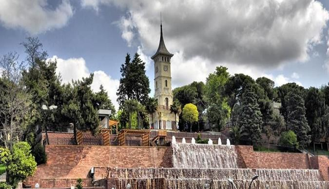

Kocaeli'de Gezilecek Yerler
1. İzmit Saat Kulesi
İzmit’in Kemalpaşa Mahallesi’nde bulunan saat kulesi, İzmit Mutasarrıfı Musa Kazım bey tarafından Sultan II. Abdülhamid’in tahta çıkışının 25.yıldönümü anısına, Mimar Vedat Tek Bey’e, 1900 (1901) yılında yaptırılmıştır.
Daha fazla bilgi için ilgili sayfaya gidiniz.
Daha Fazla
